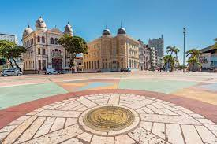
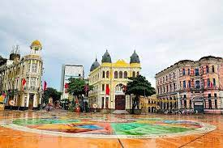

Sobre o Marco Zero
O Marco Zero é um dos pontos turísticos mais emblemáticos do Recife, localizado nas margens do Rio Capibaribe.
Construído em 1938, o Marco Zero é conhecido por ser o ponto inicial das estradas que cortam o estado de Pernambuco.
Galeria

Contato
Para mais informações, entre em contato:
Email: marcozero@recife.com
Telefone: (81) 1234-5678